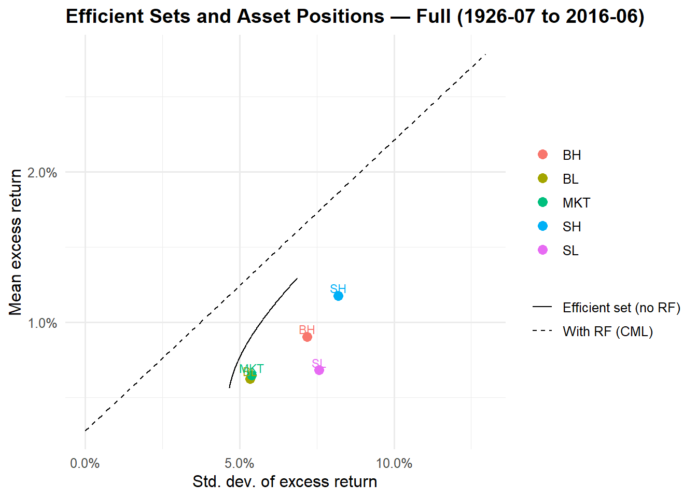
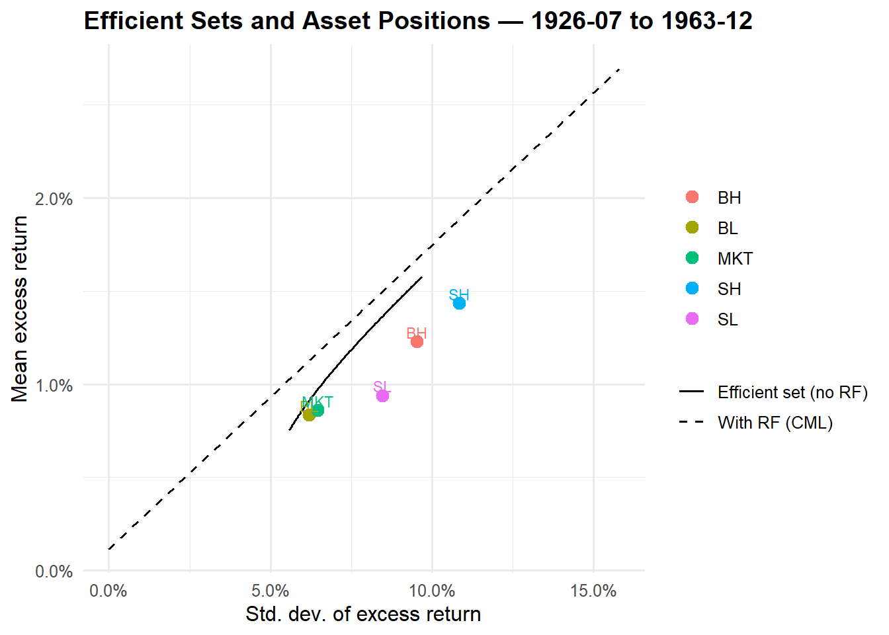
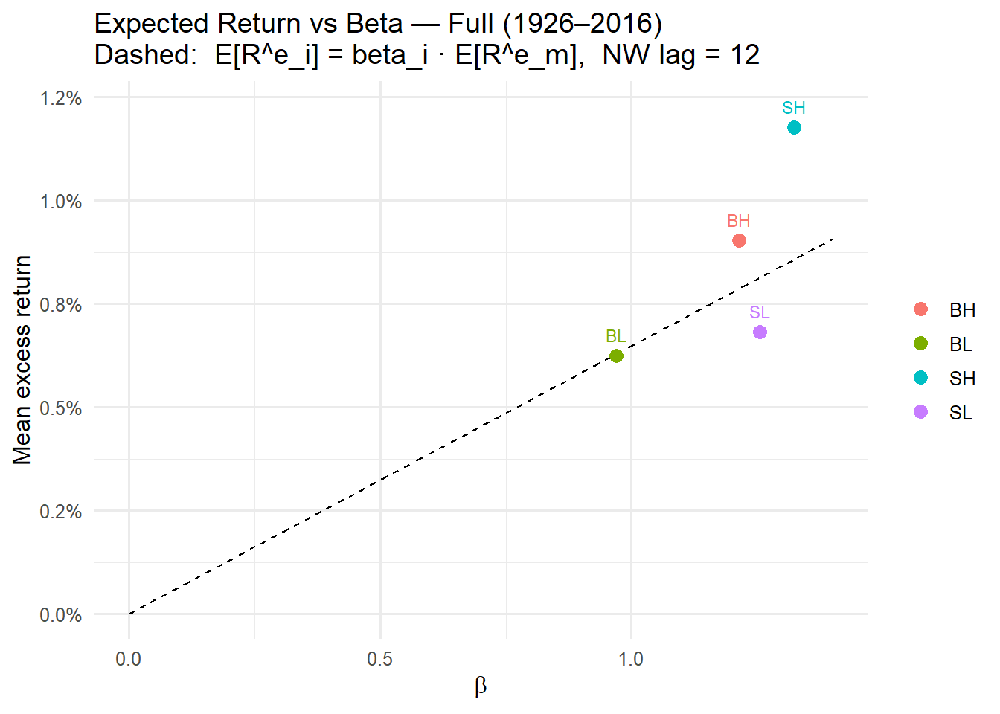
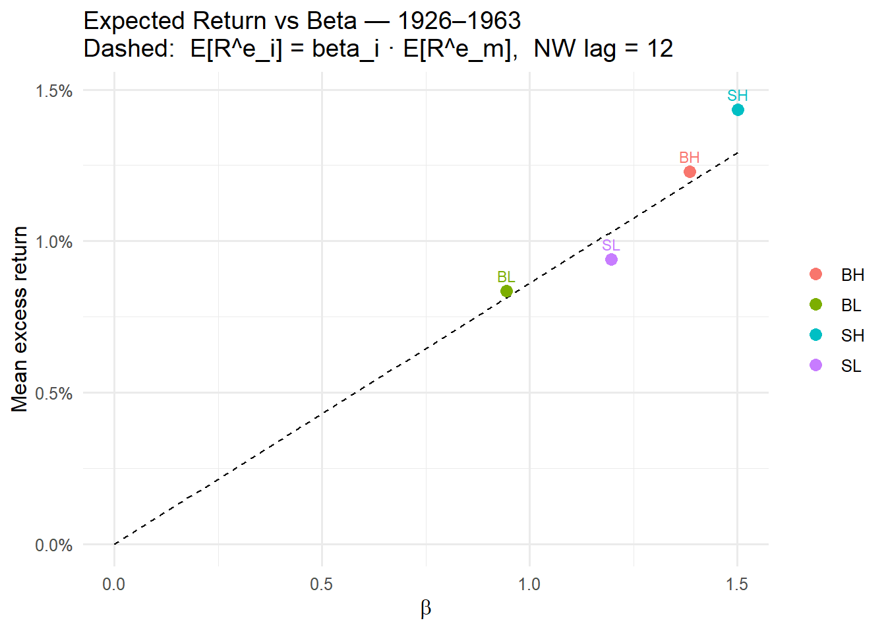
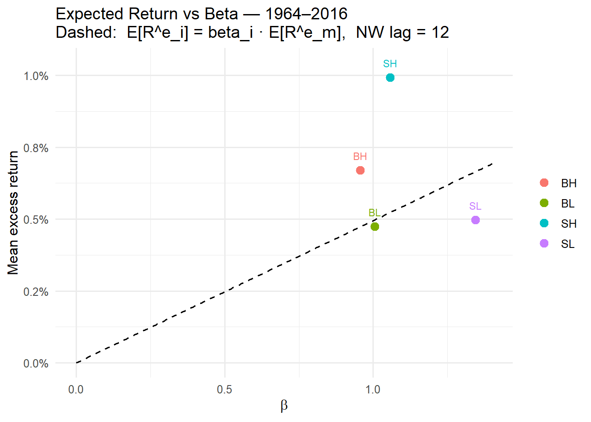
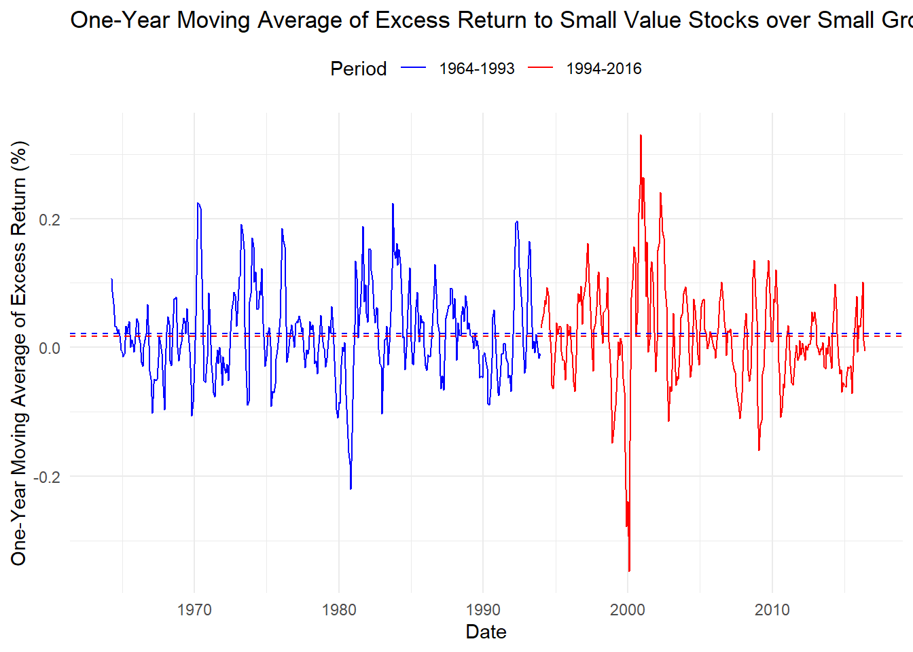
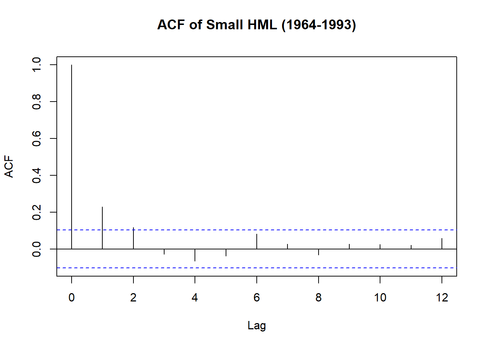
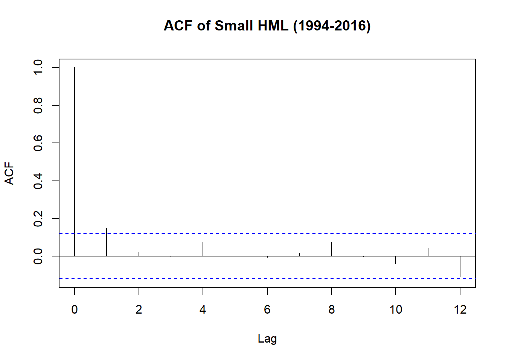

rm(list = ls())
# ---- packages ----
library(readxl)
library(dplyr)
library(tidyr)
library(ggplot2)
library(lubridate)
library(stringr)
library(scales)
library(data.table)
library(tidyverse)
library(kableExtra)
library(quantmod)
library(quantreg)
library(gridExtra)
library(fixest)
library(data.table)
library(fixest)
library(ggplot2)
library(scales)
# =========================================================
# Empirical Frontier (R): Full sample + two subsamples
# =========================================================
# ---- 1) Load data ----
# Change the file/sheet names below to match your spreadsheet
path_xlsx <- "../Data/Problem3.5_data.xlsx"
sheet_nm <- "Sheet1"
raw <- read_xlsx(path_xlsx, sheet = sheet_nm,
col_names = c('Date',"SL","SH","BL","BH","MKT", "RF"), skip = 1) |>
mutate(Date = as.character(Date)) |>
mutate(Date = as.Date(paste(Date,01), format = '%Y%m%d')) |>
arrange(Date)
# If returns are in percentages, convert to decimals:
raw <- raw |> mutate(across(c(SL, SH, BL, BH, MKT, RF), ~ .x/100))
assets <- c("SL","SH","BL","BH","MKT")
rf_col <- "RF"
stopifnot(all(c("Date", assets, rf_col) %in% names(raw)))Pset 3 - Problem 3.5 Fama French Portfolios
Problem 3.5 Fama French Portfolios
In this exercise, you are asked to explore some classic issues from the empirical literature on stock market returns. The data for this question can be found in an Excel spreadsheet on the textbook website. To perform the analysis, we suggest using MATLAB or similar software that allows you to write flexible code.
We consider six assets: four Fama-French portfolios (small-low, small-high, big-low, big-high), the market portfolio, and the 30-day Treasury bill. The four Fama-French portfolios are the corners of the \(2 \times 3\) size/value portfolios found on Kenneth French’s website. The market portfolio is the value-weighted portfolio of stocks listed on the NYSE, AMEX, and NASDAQ. The data set runs from July 1926 to June 2016.
- Download the data from the textbook website. Do the exercises described in parts (i), (ii), and (iii) for the whole sample and also for two subsamples: July 1926–December 1963 and January 1964–June 2016.
Estimate the vector of sample mean excess returns and the covariance matrix of excess returns for each of the samples. Use these estimates to compute two ex-post mean–variance efficient sets: one for portfolios not including the riskless asset and one including the riskless asset. Plot the two sets on a graph with the standard deviation of excess returns on the horizontal axis and the mean excess return on the vertical axis, and indicate where each of the four Fama-French portfolios and the market portfolio lie. Calculate the Sharpe ratios of the tangency portfolio and the market portfolio.
# Build excess returns for the risky assets df <- raw |> mutate(across(all_of(assets), \(x) x - .data[[rf_col]], .names = "{.col}_ex")) |> select('Date', 'RF', ends_with('_ex')) |> rename_with(~str_remove(.x, "_ex"), ends_with("_ex"), .cols = ends_with("_ex")) # ---- 2) Define samples ---- rng_full <- c(ymd("1926-07-01"), ymd("2016-06-30")) rng_1 <- c(ymd("1926-07-01"), ymd("1963-12-31")) rng_2 <- c(ymd("1964-01-01"), ymd("2016-06-30")) samples <- list( `Full (1926-07 to 2016-06)` = df |> filter(Date >= rng_full[1], Date <= rng_full[2]), `1926-07 to 1963-12` = df |> filter(Date >= rng_1[1], Date <= rng_1[2]), `1964-01 to 2016-06` = df |> filter(Date >= rng_2[1], Date <= rng_2[2]) ) # ---- 3) Helper functions (Markowitz algebra, no short-sale constraints) ---- stat_excess <- function(X, rf) { # X: data frame of the 5 *excess* returns (SL..MKT), rf: risk-free (level, not excess) R <- as.matrix(select(X, all_of(assets))) # T x N excess returns mu <- colMeans(R) # N x 1 (mean excess) S <- cov(R) # N x N (covariance) list(mu = mu, S = S, rf = mean(X[[rf_col]]), R = R) } mv_constants <- function(mu, S) { iS <- solve(S) one <- rep(1, length(mu)) A <- as.numeric(t(one) %*% iS %*% one) B <- as.numeric(t(one) %*% iS %*% mu) C <- as.numeric(t(mu) %*% iS %*% mu) D <- A*C - B^2 list(A=A,B=B,C=C,D=D,iS=iS,one=one) } # Minimum-variance weights given target mean excess return m (sum w = 1) w_mv_target <- function(mu, S, m) { K <- mv_constants(mu, S) with(K, { lam <- (C - B*m) / D gam <- (A*m - B) / D w <- lam * iS %*% one + gam * iS %*% mu as.numeric(w) }) } # Tangency (max Sharpe) portfolio with risk-free (no weight constraint before normalization) w_tangent <- function(mu, S, rf_level) { # Here mu are *excess* means already => rf is only used for plotting the CML anchor iS <- solve(S) k <- as.numeric(t(mu) %*% iS %*% mu) # squared max Sharpe ratio w_unnorm <- as.numeric(iS %*% mu) w <- w_unnorm / sum(w_unnorm) # normalize to sum to 1 for reporting list(w = w, sr = sqrt(k)) } # Build analytical frontier (without risk-free) along a grid of target means frontier_df <- function(mu, S, n = 200) { K <- mv_constants(mu, S) # target means grid from slightly below min asset mean to above max m_grid <- seq(min(mu)*0.9, max(mu)*1.1, length.out = n) var_grid <- (K$A*m_grid^2 - 2*K$B*m_grid + K$C) / K$D tibble(mean = m_grid, sd = sqrt(pmax(var_grid, 0))) } # Capital Market Line points between rf and tangent portfolio expected return cml_df <- function(mu, S, rf_level, n = 100) { tan <- w_tangent(mu, S, rf_level) m_tan <- sum(tan$w * mu) + rf_level # total mean (incl. rf) if you were to invest fully in tangent sd_tan <- sqrt(as.numeric(t(tan$w) %*% S %*% tan$w)) # Points along the CML from rf to (rf + m_excess_at_tan) at multiples of tangent's sd sd_seq <- seq(0, sd_tan*1.4, length.out = n) tibble( sd = sd_seq, mean = rf_level + tan$sr * sd_seq ) } # Format weights as a compact label fmt_w <- function(w) paste0(names(w), "=", sprintf("%.2f", w), collapse = ", ") # ---- 4) Run all samples and plot ---- results <- lapply(names(samples), function(lbl) { X <- samples[[lbl]] # stats st <- stat_excess(X, rf_col) mu <- st$mu S <- st$S rfL <- st$rf # frontiers fr <- frontier_df(mu, S) cml <- cml_df(mu, S, rfL) # individual risky assets (excess mean vs sd) pts <- sapply(assets, function(a) { r <- X[[a]] c(mean = mean(r), sd = sd(r)) }) pts <- tibble(asset = assets, mean = pts["mean",], sd = pts["sd",]) # tangency and market metrics tan <- w_tangent(mu, S, rfL) wtan <- setNames(tan$w, assets) sr_tan <- tan$sr # market portfolio Sharpe (ex-post) mkt_ex <- X$MKT sr_mkt <- mean(mkt_ex) / sd(mkt_ex) list(label = lbl, mu = mu, S = S, rf = rfL, frontier = fr, cml = cml, points = pts, w_tan = wtan, sr_tan = sr_tan, sr_mkt = sr_mkt) }) # ---- 5) Visualization + console output ---- for (res in results) { cat("\n=============================\n") cat("Sample:", res$label, "\n") cat("-----------------------------\n") cat("Mean excess returns (annualized if you like: multiply by 12):\n") print(round(res$mu, 6)) cat("\nCovariance matrix (monthly excess returns):\n") print(round(res$S, 6)) cat("\nRisk-free (average, monthly):", round(res$rf, 6), "\n") cat("\nTangency weights (sum to 1):\n") print(round(res$w_tan, 4)) cat("Sharpe (Tangency):", round(res$sr_tan, 3), "\n") cat("Sharpe (Market): ", round(res$sr_mkt, 3), "\n") # Prepare df for plotting p_df1 <- res$frontier |> mutate(set = "Efficient set (no RF)") p_df2 <- res$cml |> mutate(set = "With RF (CML)") # Identify minimum-variance point on analytical frontier (for reference) # (Optional cosmetic: we keep entire frontier; the upper branch is the efficient one.) g <- ggplot() + geom_line(data = p_df1, aes(x = sd, y = mean, linetype = set)) + geom_line(data = p_df2, aes(x = sd, y = mean, linetype = set)) + geom_point(data = res$points, aes(x = sd, y = mean, color = asset), size = 3) + geom_text(data = res$points, aes(x = sd, y = mean, label = asset, color = asset), nudge_y = 0.0005, show.legend = FALSE, size = 3) + scale_x_continuous("Std. dev. of excess return", labels = percent_format(accuracy = 0.1)) + scale_y_continuous("Mean excess return", labels = percent_format(accuracy = 0.1)) + scale_linetype_manual(values = c("Efficient set (no RF)" = "solid", "With RF (CML)" = "dashed")) + ggtitle(paste0("Efficient Sets and Asset Positions — ", res$label)) + theme_minimal(base_size = 12) + theme(legend.title = element_blank(), plot.title = element_text(face = "bold")) print(g) }============================= Sample: Full (1926-07 to 2016-06) ----------------------------- Mean excess returns (annualized if you like: multiply by 12): SL SH BL BH MKT 0.006817 0.011767 0.006251 0.009031 0.006474 Covariance matrix (monthly excess returns): SL SH BL BH MKT SL 0.005722 0.005554 0.003451 0.004427 0.003634 SH 0.005554 0.006715 0.003443 0.005395 0.003831 BL 0.003451 0.003443 0.002843 0.003191 0.002806 BH 0.004427 0.005395 0.003191 0.005155 0.003515 MKT 0.003634 0.003831 0.002806 0.003515 0.002896 Risk-free (average, monthly): 0.002793 Tangency weights (sum to 1): SL SH BL BH MKT -2.1845 2.8963 3.3128 -0.9518 -2.0729 Sharpe (Tangency): 0.193 Sharpe (Market): 0.12
============================= Sample: 1926-07 to 1963-12 ----------------------------- Mean excess returns (annualized if you like: multiply by 12): SL SH BL BH MKT 0.009399 0.014339 0.008361 0.012290 0.008612 Covariance matrix (monthly excess returns): SL SH BL BH MKT SL 0.007159 0.008578 0.004616 0.007239 0.004990 SH 0.008578 0.011752 0.005588 0.009727 0.006261 BL 0.004616 0.005588 0.003839 0.005192 0.003941 BH 0.007239 0.009727 0.005192 0.009085 0.005778 MKT 0.004990 0.006261 0.003941 0.005778 0.004173 Risk-free (average, monthly): 0.001144 Tangency weights (sum to 1): SL SH BL BH MKT -1.9567 1.9977 6.2070 0.4004 -5.6482 Sharpe (Tangency): 0.163 Sharpe (Market): 0.133
============================= Sample: 1964-01 to 2016-06 ----------------------------- Mean excess returns (annualized if you like: multiply by 12): SL SH BL BH MKT 0.004973 0.009931 0.004744 0.006704 0.004947 Covariance matrix (monthly excess returns): SL SH BL BH MKT SL 0.004697 0.003396 0.002617 0.002416 0.002665 SH 0.003396 0.003122 0.001912 0.002301 0.002096 BL 0.002617 0.001912 0.002131 0.001759 0.001995 BH 0.002416 0.002301 0.001759 0.002345 0.001895 MKT 0.002665 0.002096 0.001995 0.001895 0.001983 Risk-free (average, monthly): 0.00397 Tangency weights (sum to 1): SL SH BL BH MKT -1.9453 3.2886 3.0589 -0.6265 -2.7757 Sharpe (Tangency): 0.294 Sharpe (Market): 0.111
# ---- 6) Notes ---- # - Returns are treated as MONTHLY. To report annualized means/SDs or Sharpe ratios, # multiply mean by 12 and SD by sqrt(12); Sharpe is invariant if both are annualized. # - The efficient set “without RF” is the full (unconstrained) Markowitz frontier allowing shorting. # If you need no-short-sale constraints, you’ll need a QP solver (e.g., quadprog) across target means.Plot expected return against \(\beta\) for each of the portfolios. Calculate \(\alpha\) s and discuss your results.
# ========================================================= # CAPM with fixest + data.table, SML plot, alphas/betas # (assumes df already in memory with excess returns) # ========================================================= # Convert to data.table DT <- as.data.table(df) DT[, `:=`( SL_ex = SL, SH_ex = SH, BL_ex = BL, BH_ex = BH, MKT_ex = MKT)] # ---- define samples (data.table-style) ---- s_full <- DT[Date >= as.Date("1926-07-01") & Date <= as.Date("2016-06-30")] s_1 <- DT[Date >= as.Date("1926-07-01") & Date <= as.Date("1963-12-31")] s_2 <- DT[Date >= as.Date("1964-01-01") & Date <= as.Date("2016-06-30")] samples <- list( `Full (1926–2016)` = s_full, `1926–1963` = s_1, `1964–2016` = s_2 ) # ---- function: run CAPM with fixest (NW lags) + SML plot ---- capm_fixest_dt <- function(DT_sample, label, nw_lag = 12) { assets <- c("SL_ex", "SH_ex", "BL_ex", "BH_ex") # run feols for each asset with Newey-West vcov res <- rbindlist(lapply(assets, function(a) { fml <- as.formula(paste0(a, " ~ MKT_ex")) m <- feols(fml, data = DT_sample, vcov = NW(lag = nw_lag), panel.id = ~ Date + RF) ct <- coeftable(m) # Check coefficient names to avoid subscript errors intercept_name <- if("(Intercept)" %in% rownames(ct)) "(Intercept)" else names(coef(m))[1] slope_name <- if("MKT_ex" %in% rownames(ct)) "MKT_ex" else names(coef(m))[2] list( asset = gsub("_ex$", "", a), # Remove _ex suffix for display alpha = coef(m)[[intercept_name]], t_alpha = ct[intercept_name, "t value"], beta = coef(m)[[slope_name]], t_beta = ct[slope_name, "t value"], mean_excess = DT_sample[, mean(get(a), na.rm = TRUE)] ) })) # Security Market Line: E[R_i^e] = beta_i * E[R_m^e] Em <- DT_sample[, mean(MKT_ex, na.rm = TRUE)] bmin <- min(0, res[, min(beta, na.rm = TRUE)]) bmax <- max(1.4, res[, max(beta, na.rm = TRUE)]) sml <- data.table(beta = seq(bmin, bmax, length.out = 200)) sml[, mean_excess := Em * beta] # Plot: E[excess return] vs beta g <- ggplot() + geom_line(data = sml, aes(beta, mean_excess), linetype = "dashed") + geom_point(data = res, aes(beta, mean_excess, color = asset), size = 3) + geom_text(data = res, aes(beta, mean_excess, label = asset, color = asset), nudge_y = 0.0005, show.legend = FALSE, size = 3) + scale_x_continuous(expression(beta)) + scale_y_continuous("Mean excess return", labels = percent_format(accuracy = 0.1)) + ggtitle(paste0("Expected Return vs Beta — ", label, "\nDashed: E[R^e_i] = beta_i · E[R^e_m], NW lag = ", nw_lag)) + theme_minimal(base_size = 12) + theme(legend.title = element_blank()) print(g) # neat table setcolorder(res, c("asset","beta","t_beta","alpha","t_alpha","mean_excess")) res[] } # ---- run for all samples ---- capm_out <- lapply(names(samples), function(nm) { cat("\n", nm, "\n", strrep("=", nchar(nm)+2), "\n", sep = "") out <- capm_fixest_dt(samples[[nm]], nm, nw_lag = 12) print(out[, lapply(.SD, function(x) if(is.numeric(x)) round(x, 4) else x)]) invisible(out) })Full (1926–2016) ==================
asset beta t_beta alpha t_alpha mean_excess <char> <num> <num> <num> <num> <num> 1: SL 1.2551 36.0568 -0.0013 -1.3200 0.0068 2: SH 1.3230 21.2750 0.0032 2.8936 0.0118 3: BL 0.9691 78.5374 0.0000 -0.0687 0.0063 4: BH 1.2137 26.5295 0.0012 1.3414 0.0090 1926–1963 ===========
asset beta t_beta alpha t_alpha mean_excess <char> <num> <num> <num> <num> <num> 1: SL 1.1959 22.8224 -0.0009 -0.6191 0.0094 2: SH 1.5003 17.0047 0.0014 0.6916 0.0143 3: BL 0.9445 57.2320 0.0002 0.4457 0.0084 4: BH 1.3847 24.0123 0.0004 0.2366 0.0123 1964–2016 ===========
asset beta t_beta alpha t_alpha mean_excess <char> <num> <num> <num> <num> <num> 1: SL 1.3441 40.4906 -0.0017 -1.2718 0.0050 2: SH 1.0571 26.3945 0.0047 3.8961 0.0099 3: BL 1.0061 72.0430 -0.0002 -0.5201 0.0047 4: BH 0.9559 30.8439 0.0020 2.0788 0.0067names(capm_out) <- names(samples)Test the hypothesis that the market portfolio is mean–variance efficient by calculating a Gibbons–Ross–Shanken (GRS) test statistic. Interpret your results.
# ========================================================= # Gibbons-Ross-Shanken (GRS) Test for Market Efficiency # ========================================================= library(mvtnorm) # Function to compute GRS test statistic grs_test <- function(DT_sample, assets = c("SL_ex", "SH_ex", "BL_ex", "BH_ex")) { # Number of assets and observations N <- length(assets) T_obs <- nrow(DT_sample) # Extract excess returns matrix (T x N) Y <- as.matrix(DT_sample[, ..assets]) X <- as.matrix(DT_sample[, .(const = 1, MKT_ex)]) # Remove any rows with missing values complete_rows <- complete.cases(cbind(Y, X)) Y <- Y[complete_rows, ] X <- X[complete_rows, ] T_obs <- nrow(Y) # Run system of regressions: Y = X*B + E # where B is (2 x N) matrix of [alpha; beta] coefficients B_hat <- solve(t(X) %*% X) %*% t(X) %*% Y # Residuals (T x N) E_hat <- Y - X %*% B_hat # Sample covariance matrix of residuals (N x N) Sigma_hat <- (t(E_hat) %*% E_hat) / (T_obs - 2) # Extract alphas (first row of B_hat) alpha_hat <- B_hat[1, ] # Market excess return statistics mkt_ex <- DT_sample[complete.cases(DT_sample[, .(MKT_ex)]), MKT_ex] mu_m <- mean(mkt_ex) sigma2_m <- var(mkt_ex) # GRS test statistic # GRS = (T-N-1)/N * (1 + mu_m^2/sigma2_m)^(-1) * alpha_hat' * Sigma_hat^(-1) * alpha_hat factor1 <- (T_obs - N - 1) / N factor2 <- 1 / (1 + mu_m^2 / sigma2_m) # Quadratic form: alpha' * Sigma^(-1) * alpha quad_form <- as.numeric(t(alpha_hat) %*% solve(Sigma_hat) %*% alpha_hat) GRS_stat <- factor1 * factor2 * quad_form # Under H0: alphas = 0, GRS follows F(N, T-N-1) distribution df1 <- N df2 <- T_obs - N - 1 p_value <- 1 - pf(GRS_stat, df1, df2) # Critical values at common significance levels crit_01 <- qf(0.99, df1, df2) crit_05 <- qf(0.95, df1, df2) crit_10 <- qf(0.90, df1, df2) # Individual alpha t-statistics for reference se_alpha <- sqrt(diag(solve(Sigma_hat) * as.numeric(sigma2_m + mu_m^2)) / T_obs) t_alpha <- alpha_hat / se_alpha return(list( GRS_statistic = GRS_stat, p_value = p_value, df1 = df1, df2 = df2, critical_values = c(`1%` = crit_01, `5%` = crit_05, `10%` = crit_10), alphas = alpha_hat, t_alphas = t_alpha, T_obs = T_obs, N_assets = N, market_sharpe = mu_m / sqrt(sigma2_m) )) } # Run GRS test for all samples grs_results <- lapply(names(samples), function(nm) { cat("\n", rep("=", 60), "\n") cat("GRS Test Results:", nm, "\n") cat(rep("=", 60), "\n") result <- grs_test(samples[[nm]]) # Print results cat(sprintf("GRS Test Statistic: %.4f\n", result$GRS_statistic)) cat(sprintf("Degrees of freedom: (%d, %d)\n", result$df1, result$df2)) cat(sprintf("P-value: %.6f\n", result$p_value)) cat("\nCritical Values:\n") cat(sprintf(" 1%%: %.4f\n", result$critical_values[1])) cat(sprintf(" 5%%: %.4f\n", result$critical_values[2])) cat(sprintf(" 10%%: %.4f\n", result$critical_values[3])) cat("\nTest Interpretation:\n") if (result$p_value < 0.01) { cat("*** REJECT H0 at 1% level: Market portfolio is NOT mean-variance efficient\n") } else if (result$p_value < 0.05) { cat("** REJECT H0 at 5% level: Market portfolio is NOT mean-variance efficient\n") } else if (result$p_value < 0.10) { cat("* REJECT H0 at 10% level: Market portfolio is NOT mean-variance efficient\n") } else { cat(" FAIL TO REJECT H0: Cannot reject market efficiency\n") } cat(sprintf("\nSample size: %d observations\n", result$T_obs)) cat(sprintf("Market Sharpe ratio: %.4f\n", result$market_sharpe)) cat("\nIndividual Alphas and t-statistics:\n") alpha_df <- data.frame( Asset = c("SL", "SH", "BL", "BH"), Alpha = round(result$alphas, 4), t_stat = round(result$t_alphas, 4), p_value = round(2 * (1 - pt(abs(result$t_alphas), result$df2)), 4) ) print(alpha_df) invisible(result) })= = = = = = = = = = = = = = = = = = = = = = = = = = = = = = = = = = = = = = = = = = = = = = = = = = = = = = = = = = = = GRS Test Results: Full (1926–2016) = = = = = = = = = = = = = = = = = = = = = = = = = = = = = = = = = = = = = = = = = = = = = = = = = = = = = = = = = = = = GRS Test Statistic: 6.0336 Degrees of freedom: (4, 1075) P-value: 0.000084 Critical Values: 1%: 3.3366 5%: 2.3802 10%: 1.9501 Test Interpretation: *** REJECT H0 at 1% level: Market portfolio is NOT mean-variance efficient Sample size: 1080 observations Market Sharpe ratio: 0.1203 Individual Alphas and t-statistics: Asset Alpha t_stat p_value SL_ex SL -0.0013 -0.0200 0.9840 SH_ex SH 0.0032 0.0446 0.9644 BL_ex BL 0.0000 -0.0001 0.9999 BH_ex BH 0.0012 0.0134 0.9893 = = = = = = = = = = = = = = = = = = = = = = = = = = = = = = = = = = = = = = = = = = = = = = = = = = = = = = = = = = = = GRS Test Results: 1926–1963 = = = = = = = = = = = = = = = = = = = = = = = = = = = = = = = = = = = = = = = = = = = = = = = = = = = = = = = = = = = = GRS Test Statistic: 0.9707 Degrees of freedom: (4, 445) P-value: 0.423214 Critical Values: 1%: 3.3615 5%: 2.3920 10%: 1.9575 Test Interpretation: FAIL TO REJECT H0: Cannot reject market efficiency Sample size: 450 observations Market Sharpe ratio: 0.1333 Individual Alphas and t-statistics: Asset Alpha t_stat p_value SL_ex SL -0.0009 -0.0074 0.9941 SH_ex SH 0.0014 0.0124 0.9901 BL_ex BL 0.0002 0.0005 0.9996 BH_ex BH 0.0004 0.0024 0.9981 = = = = = = = = = = = = = = = = = = = = = = = = = = = = = = = = = = = = = = = = = = = = = = = = = = = = = = = = = = = = GRS Test Results: 1964–2016 = = = = = = = = = = = = = = = = = = = = = = = = = = = = = = = = = = = = = = = = = = = = = = = = = = = = = = = = = = = = GRS Test Statistic: 11.4207 Degrees of freedom: (4, 625) P-value: 0.000000 Critical Values: 1%: 3.3493 5%: 2.3862 10%: 1.9539 Test Interpretation: *** REJECT H0 at 1% level: Market portfolio is NOT mean-variance efficient Sample size: 630 observations Market Sharpe ratio: 0.1111 Individual Alphas and t-statistics: Asset Alpha t_stat p_value SL_ex SL -0.0017 -0.0212 0.9831 SH_ex SH 0.0047 0.0462 0.9631 BL_ex BL -0.0002 -0.0010 0.9992 BH_ex BH 0.0020 0.0177 0.9859names(grs_results) <- names(samples)
- In recent years there has been concern that the publicity given to value investing and the creation of quantitative investment strategies may alter the properties of value returns. One variant of this concern is that the excess return to value may disappear permanently as quantitative investors bid up the price of value stocks to efficient levels. Another variant is that the excess return to value may become less stable as capital flows in and out of value stocks in response to shifting sentiment of end in- vestors about quantitative value strategies. Some have even argued that such shifting sentiment may cause the excess return to value to display a pattern of short-term positive autocorrelation (“style momentum”) and longer-term negative autocorrelation (“style reversal”).
Plot a one-year moving average of the excess return to small value stocks over small growth stocks (small-high minus small-low, or “small HML”) over the period January 1964–June 2016. Compare the behavior of the plot in two subsamples: January 1964–December 1993 and January 1994–June 2016.
df <- data.table(df) dt_plot <- df[between(Date, as.Date("1964-01-01"), as.Date("2016-06-30")), .(Date, SL, SH, RF)] %>% .[, ret_small_hml := (SH - SL) ] %>% .[, mean_ex_ret := frollmean(ret_small_hml, n = 4, align = "right", na.rm = TRUE) * 4] %>% .[, period := fcase(between(Date, as.Date("1964-01-01"), as.Date("1993-12-31")), 'period_1', between(Date, as.Date("1994-01-01"), as.Date("2016-06-30")), 'period_2', default = 'other')] %>% .[period != 'other'] dt_plot[, average := mean(mean_ex_ret, na.rm = TRUE), by = period] dt_plot %>% ggplot(aes(x = Date, y = mean_ex_ret, color = period)) + geom_line() + geom_hline(aes(yintercept = average, color = period), linetype = "dashed") + labs(title = "One-Year Moving Average of Excess Return to Small Value Stocks over Small Growth Stocks", x = "Date", y = "One-Year Moving Average of Excess Return (%)", color = "Period") + scale_color_manual(values = c("period_1" = "blue", "period_2" = "red"), labels = c("1964-1993", "1994-2016")) + theme_minimal() + theme(legend.position = "top")
Calculate the mean, standard deviation, and Sharpe ratio of: • The excess return on the market portfolio over the Treasury bill; • The return on small HML; for each of the two subsamples.
dt_plot %>% .[, .(mean_ex_ret = mean(ret_small_hml, na.rm = TRUE), sd_ex_ret = sd(ret_small_hml, na.rm = TRUE), sharpe_ratio = mean(ret_small_hml, na.rm = TRUE) / sd(ret_small_hml, na.rm = TRUE)), by = period] %>% kable(caption = "Small HML Return Statistics by Period") %>% kable_styling(full_width = FALSE)Small HML Return Statistics by Period period mean_ex_ret sd_ex_ret sharpe_ratio period_1 0.0054916 0.0285874 0.1920979 period_2 0.0042455 0.0361778 0.1173503 Aggregate the small HML return to quarterly frequency and plot its autocorrelation function out to 12 quarters (3 years) in each of the two subsamples.
df %>% .[, ret_small_hml := (SH - SL) ] %>% .[, quarter := as.yearqtr(Date)] %>% .[, period := fcase(between(quarter, as.yearqtr("1964 Q1"), as.yearqtr("1993 Q4")), 'period_1', between(quarter, as.yearqtr("1994 Q1"), as.yearqtr("2016 Q2")), 'period_2', default = 'other')] stats::acf(df[period == 'period_1', .(ret_small_hml)], lag.max = 12, main = "ACF of Small HML (1964-1993)")
stats::acf(df[period == 'period_2', .(ret_small_hml)], lag.max = 12, main = "ACF of Small HML (1994-2016)")
Discuss what your results suggest about the changing behavior of value returns in recent years. Do they support any of the concerns described above?